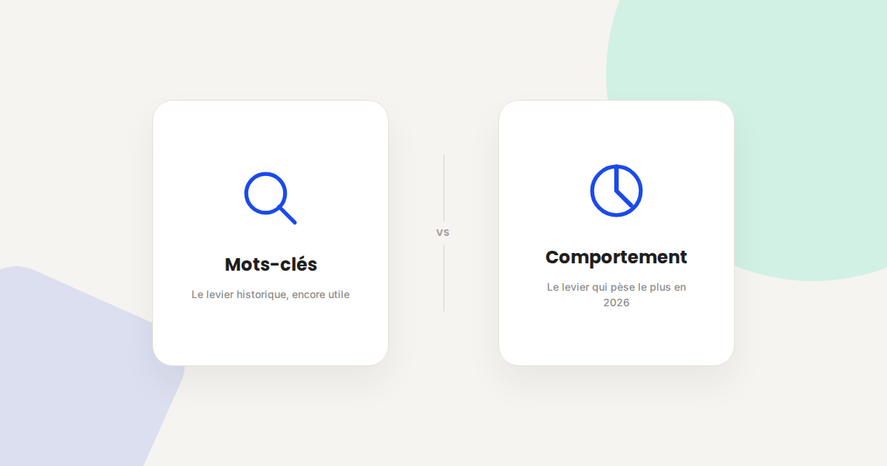
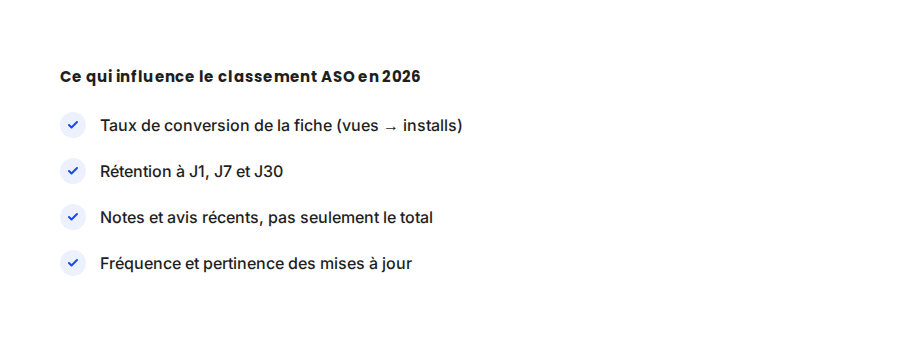

ASO en 2026 : ce qui fait vraiment monter une app dans les stores
L'ASO a la réputation d'être un jeu de mots-clés dans le titre et la description. C'est de moins en moins vrai : les deux stores pondèrent de plus en plus les signaux de comportement (taux de conversion de la fiche, rétention) au détriment du texte pur. Voici ce qui compte vraiment aujourd'hui.

Dans les missions ASO que je mène, la première question qu'on me pose est presque toujours : « quels mots-clés faut-il mettre dans le titre ? ». C'est une vraie question, mais ce n'est plus la première à se poser. Les algorithmes de classement de l'App Store et de Google Play ont évolué vers des signaux de comportement bien plus difficiles à manipuler que le texte d'une fiche.
Ce qui ne change pas
Le champ mots-clés reste indexé et continue de déterminer sur quelles requêtes votre app peut apparaître : aucun signal comportemental ne compense l'absence du bon mot-clé dans les champs indexables (titre, sous-titre sur iOS, champ dédié keywords). C'est la condition d'entrée, pas le facteur de classement final. De la même façon, des visuels de mauvaise qualité (icône peu lisible, captures d'écran datées) continuent de plomber le taux de clic avant même que l'algorithme n'entre en jeu.
Ce qui change vraiment
- Le taux de conversion de la fiche pèse plus lourd que la densité de mots-clés. Une fiche qui convertit bien (visiteurs de la fiche → installations) envoie un signal de pertinence à l'algorithme, qui la remonte sur les requêtes pour lesquelles elle convertit le mieux — même sans optimisation textuelle poussée.
- La rétention post-installation est devenue un signal de classement. Une app massivement désinstallée dans les 48 heures envoie un signal négatif qui peut faire chuter son classement, même avec un bon volume de téléchargements initial.
- Les avis récents comptent plus que le nombre total. Un historique de 10 000 avis à 4,5 étoiles ne protège plus une app dont les 50 derniers avis sont mauvais : les stores pondèrent la fraîcheur du signal de satisfaction.
- La fréquence des mises à jour influence la confiance algorithmique. Une app mise à jour régulièrement (corrections, nouvelles fonctionnalités) est perçue comme activement maintenue, ce qui joue en sa faveur face à une app à l'abandon apparent.

Un exemple qui illustre bien la différence
Sur une app que j'ai accompagnée, un simple test A/B des captures d'écran de la fiche App Store — sans toucher un seul mot-clé — a fait passer le taux de conversion de 28 % à 41 %. Le classement organique sur les mots-clés principaux a progressé dans les semaines suivantes, sans aucune autre action ASO. La fiche n'avait pas changé de contenu textuel ; elle convertissait simplement mieux, et l'algorithme l'a récompensée pour ça.
Ce qu'il faut faire concrètement
- Testez vos visuels avant vos mots-clés. Les outils de test A/B natifs (Google Play Experiments, Product Page Optimization sur iOS) permettent de mesurer l'impact d'une icône ou de captures d'écran sur le taux de conversion, sans risque pour votre classement actuel.
- Surveillez la rétention à J1 comme un indicateur d'alerte précoce : une chute soudaine signale souvent un problème d'onboarding ou de bug récent qui va, avec un peu de délai, se répercuter sur le classement.
- Répondez aux avis récents, en particulier les négatifs : au-delà de l'image, une réponse rapide peut inciter l'utilisateur à mettre à jour son avis, ce qui améliore directement le signal de fraîcheur.
- Planifiez des mises à jour régulières, même mineures, plutôt que d'attendre d'avoir une refonte complète à publier.
FAQ
Les mots-clés dans le titre de l'app comptent-ils encore en 2026 ?
Oui, ils restent la condition d'indexation de base : sans le bon mot-clé dans les champs indexables, votre app n'apparaît simplement pas sur la requête concernée. Mais ils ne suffisent plus à eux seuls à faire monter le classement.
Combien de temps faut-il pour voir l'effet d'une amélioration ASO ?
Les effets sur le taux de conversion (test A/B des visuels) sont visibles en quelques jours. L'effet sur le classement organique, lié aux signaux comportementaux cumulés, prend généralement plusieurs semaines.
Faut-il un budget publicitaire pour améliorer son ASO ?
Non, l'ASO organique fonctionne indépendamment du paid. Cela dit, des campagnes Apple Search Ads bien ciblées peuvent accélérer le volume de données de conversion utile pour identifier les mots-clés et visuels les plus performants.
Envie d'un audit ASO de votre application ?
Pour aller plus loin, voir la page Mobile Marketing, la page Tracking mobile, et la page Apple Search Ads.
Pour continuer sur ce sujet.